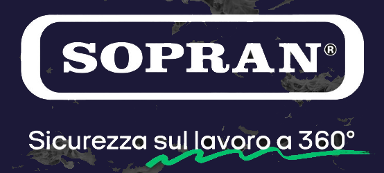

<!-- <div class="main-container">
  <mat-sidenav-container class="sidenav-container backgroundLogin">
    <mat-sidenav #drawer class="sidenav" fixedInViewport
        [attr.role]="(isHandset$ | async) ? 'dialog' : 'navigation'"
        [mode]="(isHandset$ | async) ? 'over' : 'side'"
        [opened]="(isHandset$ | async) === false">
      <mat-toolbar style="background-color: rgb(1, 29, 29);">Utente </mat-toolbar>
      <mat-nav-list>
        <span >
          <a mat-list-item routerLink="/home/carico" routerLinkActive="active" >
            <mat-icon>report_problem</mat-icon>
            Home carico
          </a>
        </span>
      </mat-nav-list>
    </mat-sidenav>
    <mat-sidenav-content>
      <mat-toolbar color="primary">
        <button
          type="button"
          aria-label="Toggle sidenav"
          mat-icon-button
          (click)="drawer.toggle()"
          *ngIf="isHandset$ | async">
          <mat-icon aria-label="Side nav toggle icon">menu</mat-icon>
        </button>
        <div style="width: 100%;">
          Prototipo Manutenzione
        </div>
        <div fxFlex fxLayout fxLayoutAlign="flex-end">
          <button  mat-icon-button routerLink="/home">
            <mat-icon>home</mat-icon>
          </button>
          <button  mat-icon-button [matMenuTriggerFor]="menu" aria-label="Example icon-button with a menu">
            <mat-icon>person</mat-icon>
          </button>
          <mat-menu #menu="matMenu">
            <button mat-menu-item (click)="logout()">
              <mat-icon>logout</mat-icon>
              <span>Logout</span>
            </button>
          </mat-menu>
        </div>
      </mat-toolbar>
      <router-outlet></router-outlet>
    </mat-sidenav-content>
  </mat-sidenav-container>
</div>

 -->

 <mat-toolbar>
  
   <button mat-icon-button *ngIf="sidenav.mode === 'over'" (click) = "sidenav.toggle() ">
     <mat-icon *ngIf = "!sidenav.opened">
       menu
      </mat-icon>
      <mat-icon *ngIf="sidenav.opened">
        close
      </mat-icon>
    </button>
    <!--  -->
    <div style="display: flex;width: 100%;justify-content: right;">
      <!-- <span style="font-size: clamp(23px, 4vw, 63px);">
        Manutenzione
      </span> -->
      <div style="flex-direction: row;">
        <button mat-icon-button (click)="logout()">
          <mat-icon>
            logout
          </mat-icon>
        </button>
      </div>
    </div>
</mat-toolbar>
<mat-sidenav-container>
  
  
   <mat-sidenav #sidenav="matSidenav">
    <h4 class="name" >{{ nameAccount }}</h4>
    <!-- <p class="designation">Operatore</p> -->
    <p></p>

    <button mat-button class="menu-button" (click)="goTohome(); sidenav.toggle()"  routerLinkActive="active" >
      <mat-icon>home</mat-icon>
      <span>Home</span>
    </button>
    
    <button mat-button class="menu-button" (click)="caricoHome(); sidenav.toggle()"  routerLinkActive="active" >
      <mat-icon>event_note</mat-icon>
      <span>Home carico</span>
    </button>

    <button mat-button class="menu-button" (click)="goToOrder(); sidenav.toggle()"  routerLinkActive="active" >
      <mat-icon>speaker_notes</mat-icon>
      <span>Ordini</span>
    </button>

    <mat-divider></mat-divider>
    <hr class="divider">  

    <button mat-button class="menu-button"  routerLinkActive="active" >
      <mat-icon>help</mat-icon>
      <span>Help</span>
    </button>

   </mat-sidenav>

   <mat-sidenav-content>
    <router-outlet></router-outlet>
  </mat-sidenav-content>
</mat-sidenav-container>


